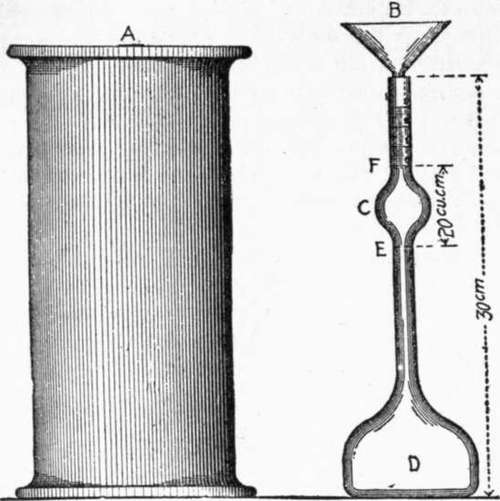

Appendix I. Progress Report Of Committee On Uniform Tests Of Cement, American Society Of CIVIL Engineers
Description
This section is from the book "Cement And Concrete", by Louis Carlton Sabin. Also available from Amazon: Cement and Concrete.
Appendix I. Progress Report Of Committee On Uniform Tests Of Cement, American Society Of CIVIL Engineers
Presented at the Annual Meeting, January 21, 1903, and Amended at the Annual Meeting, January 20, 1904.
Your Committee on Uniform Tests of Cement has devoted much time, and given very careful consideration, to the subject. Frequent meetings have been held, and a number of investigations carried on, some of which cannot be finally reported at this time.
On several matters which have been considered, such as the substitution of a natural sand for the standard quartz, and the tests for the normal consistency and constancy of volume, the Committee has not reached final conclusions.
While not prepared to submit a final report, the Committee feels that it should present a report of progress in order that the Society may be informed of the results of its investigations and conclusions.
The work of the Committee has been confined entirely to the methods for making tests, without attempting to specify what tests should be made.
In order to do full justice to the subject under consideration, it will be necessary to compile and report the results of the experiments now under way, and your Committee asks, therefore, that it be continued.
Sampling
1. Selection Of Sample
The selection of the sample for testing is a detail that must be left to the discretion of the engineer; the number and the quantity to be taken from each package will depend largely on the importance of the work, the number of tests to be made, and the facilities for making them.
2. The sample shall be a fair average of the contents of the package; it is recommended that, where conditions permit, one barrel in every ten be sampled.
3. All samples should be passed through a sieve having twenty meshes per linear inch, in order to break up lumps and remove foreign material; this is also a very effective method for mixing them together in order, to obtain an average. For determining the characteristics of a shipment of cement, the individual samples may be mixed and the average tested; where time will permit, however, it is recommended that they be tested separately.
4. Method Of Sampling
Cement in barrels should be sampled through a hole made in the center of one of the staves, midway between the heads, or in the head, by means of an auger or a sampling iron similar to that used by sugar inspectors. If in bags, it should be taken from surface to center.
Chemical Analysis
5. Significance
Chemical analysis may render valuable service in the detection of adulteration of cement with considerable amounts of inert material, such as slag or ground limestone. It is of use, also, in determining whether certain constituents, believed to be harmful when in excess of a certain percentage, as magnesia and sulphuric anhydride, are present in inadmissible proportions. While not recommending a definite limit for these impurities, the Committee would suggest that the most recent and reliable evidence appears to indicate that, for Portland cement, magnesia to the amount of 5 per cent, and sulphuric anhydride to the amount of 1.75 per cent, may safely be considered harmless.
6. The determination of the principal constituents of cement — silica, alumina, iron oxide, and lime — is not conclusive as an indication of quality. Faulty character of cement results more frequently from imperfect preparation of the raw material or defective burning than from incorrect proportions of the constituents. Cement made from very finely-ground material, and thoroughly burned, may contain much more lime than the amount usually present and still be perfectly sound. On the other hand, cements low in lime may, on account of careless preparation of the raw material, be of dangerous character. Further, the ash of the fuel used in burning may so greatly modify the composition of the product as largely to destroy the significance of the results of analysis.
7. Method
As a method to be followed for the analysis of cement that proposed by the Committee on Uniformity in the Analysis of Materials for the Portland Cement Industry, of the New York Section of the Society for Chemical Industry, and published in the Journal of the Society for January 15, 1902, is recommended.
Specific Gravity
8. Significance
The specific gravity of cement is lowered by un-derburning, adulteration, and hydration, but the adulteration must be in considerable quantity to affect the results appreciably.
9. Inasmuch as the differences in specific gravity are usually very small, great care must be exercised in making the determination.
10. When properly made, this test affords a quick check for under-burning or adulteration.
11. Apparatus And Method
The determination of specific gravity is most conveniently made with Le Chatelier's apparatus. This consists of a flask (D), Fig. 1, of 120 cu. cm. (7.32 cu. ins.) capacity, the neck of which is about 20 cm. (7.87 ins.) long; in the middle of this neck is a bulb (C), above and below which are two marks (F) and (E); the volume between these marks is 20 cu. cm. (1.22 cu. ins.). The neck has a diameter of about 9 mm. (0.35 in.), and is graduated into tenths of cubic centimeters above the mark (F).
12. Benzine (62 degrees Baume naphtha), or kerosene free from water, should be used in making the determination.
13. The specific gravity can be determined in two ways:
(1) The flask is filled with either of these liquids to the lower mark (E), and 64 gr. (2.25 oz.) of powder, previously dried at 100° Cent.
Fig. 1.
(212° Fahr.) and cooled to the temperature of the liquid, is gradually introduced through the funnel (B) [the stem of which extends into the flask to the top of the bulb (C)], until the upper mark (F) is reached. The difference in weight between the cement remaining and the original quantity (64 gr.) is the weight which has displaced 20 cu. cm.
Continue to:
- prev: Art. 90. Strength Of Concrete Blocks, And Building Regulations. Part 3
- Table of Contents
- next: Report Of Committee On Uniform Tests Of Cement. Part 2